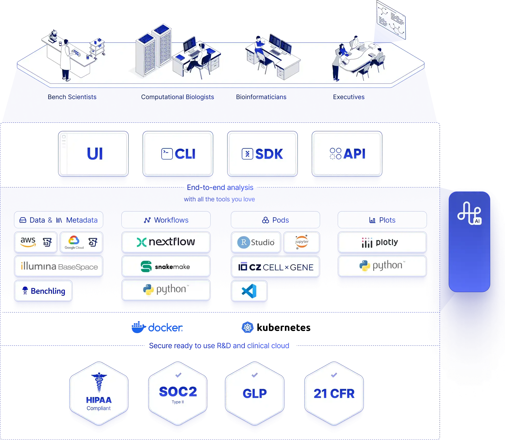

The AI-Powered Workflow Platform for Life Science Data Analysis
Orchestrating 10,000+ Tools with Domain Intelligence
From Raw Data to Insights in Hours, Not Weeks
November 2025
Life science data analysis is broken - we're fixing it with AI
Time: 2-3 weeks per analysis
Complexity: 100+ parameters to tune manually
Tools: 10-20 disconnected software
Cost: $100K+ per year per lab
Expertise: PhD required for basic analysis
Errors: 40% redo rate
Vendor Lock: Single vendor only
Updates: Manual literature tracking
Time: 2-3 hours (10x faster)
Complexity: Auto-optimized by AI
Tools: 1 platform orchestrates all
Cost: $999/month (99% cheaper)
Expertise: Anyone can use
Errors: 5% with auto-correction
Vendor Lock: All vendors supported
Updates: Real-time from literature
ROI: 10x productivity × 99% cost reduction = 1000x value
20+ years of open-source development ready to orchestrate
10,000+ integrated tools
300+ public servers
License: MIT/AFL (commercial-friendly)
2,341+ R packages
500K+ users
License: Artistic 2.0 (commercial-friendly)
200+ algorithms
Python/C++ bindings
License: BSD (commercial-friendly)
Complete LC-MS pipeline
REST API available
License: MIT (commercial-friendly)
• MS-DIAL, Skyline, ProteoWizard
• xcms, MSnbase, CAMERA
• SIRIUS, MetFrag, CFM-ID
• BWA, GATK, STAR, SAMtools
• Cell Ranger, Seurat, Scanpy
• DESeq2, edgeR, limma
• ImageJ/Fiji (500+ plugins)
• CellProfiler, napari
• Cellpose, StarDist
• GNPS (250K+ spectra)
• HMDB (220K metabolites)
• UniProt, PDB, Ensembl
Our Strategy: We don't rebuild these tools - we make them intelligent and interoperable through AI orchestration
$126B opportunity across research, clinical, and industrial applications
| Domain | Market Size | Applications | Current Pain Points | bioMate Solution |
|---|---|---|---|---|
| Genomics/NGS | $24B [Grand View Research 2024] |
Clinical diagnostics, AgBio, Pharma | Complex pipelines, version hell | Intelligent pipeline selection |
| Proteomics | $35B [BCC Research 2024] |
Drug discovery, Biomarkers, Food safety | No integrated workflows | Cross-platform orchestration |
| Flow Cytometry | $4.5B [Mordor Intelligence 2024] |
Immunology, Cell therapy, Diagnostics | FlowJo monopoly ($3K/year) | Open alternative with AI |
| Microscopy/Imaging | $7B [Allied Market Research 2024] |
Pathology, Drug screening, Research | Manual analysis, no standards | Automated image analysis |
| Cell Culture/Bioprocess | $21B [Precedence Research 2024] |
Biologics manufacturing, Cell therapy | Paper records, no integration | Digital transformation |
| Molecular Biology | $15B [Research & Markets 2024] |
Gene therapy, Synthetic bio, Diagnostics | Fragmented tools | Unified platform |
| Clinical Chemistry | $14.5B [Global Market Insights 2024] |
Hospital labs, Reference labs | Legacy LIMS, manual review | AI-assisted validation |
Total Market: $126B (hardware + software + services) | Software Addressable: ~$18.6B (15%) | Our Target: $5.26B (25% of software)
Current LIMS excel at traditional lab operations - our focus targets unmet emerging needs
Size: $2.54B → $5.19B by 2030 (12.5% CAGR)
Leaders:
• Epic Beaker: 27.6% market share
• Oracle Cerner: 22.9%
• CliniSys: 24% (4,000+ customers)
• SoftLab: 350+ contracts, 1,000+ sites
• Orchard Software: #1 rated, 2,400 labs
• Clinical Chemistry: Complete workflow automation, 99.5% autoverification (best performers)
• Hematology: Full integration with analyzers
• Microbiology: Paperless workflows, culture management
• Blood Bank: FDA-cleared modules, full compliance
• Instrument Integration: 1,100+ drivers via middleware (Data Innovations)
• Compliance: CLIA/CAP/HL7 standards native
• 14 billion tests/year processed
• 320,000 CLIA-certified labs
• 18-24 month implementations ($30M+)
• Deep hospital system integration
$200-350M
• No unified platform for genomics + transcriptomics + proteomics
• "Data integration is the biggest difficulty" - each omics has unique formats
• Current LIMS: siloed modalities
Gap
• NGS: "Integration with NGS instruments still a challenge"
• Proteomics: No automated cross-platform workflows
• Spatial Biology: Not addressed
• Single-cell: Minimal support
• "Legacy systems rigid and inflexible"
• AI mostly bolt-ons, not native
• "Built in different era" - not cloud-native
• 40 exabytes/year data by 2025, systems can't scale
$250-400M
• FHIR adoption limited
• Real-time data integration lacking
• No research-to-clinical bridge
✓ Clinical LIMS Market: Mature & well-served ($2.54B, dominated by Epic/Oracle/CliniSys)
→ We DON'T compete with established clinical chemistry/hematology LIMS
🎯 Our Focus: Emerging biology + clinical connection
→ Multi-omics ($200-350M gap) + Advanced bioinformatics + AI-native platform + Research-to-clinical bridge ($47.3B non-clinical TAM)
Use Case Strategy Validated: We target underserved emerging needs, not entrenched traditional markets
Not another tool - the AI layer that makes ALL tools work together
Domain-Specific LLM: Trained on 30M scientific papers
Workflow Generator: Natural language → Complete workflows
Parameter Optimizer: Learns from every run across all users
Tool Integration: 10,000+ tools (Galaxy, Bioconductor, OpenMS)
Auto-Chaining: Intelligently connects incompatible tools
Adaptive Execution: Adjusts parameters based on data quality
Error Recovery: Auto-diagnose and fix common issues
Quality Control: Built-in validation at every step
Report Generation: Publication-ready methods and figures
Multi-Modal: LC-MS, Genomics, Proteomics, Imaging
Collaborative: Real-time sharing and team workflows
Compliant: 21 CFR Part 11, GxP ready
AI-powered interface connecting researchers to 10,000+ tools and clinical workflows

Natural Language Interface
• "Analyze my LC-MS data for cancer biomarkers"
• Auto-select optimal tools & parameters
• Generate publication-ready workflows
Workflow Orchestration
• Nextflow + Galaxy integration
• Docker/Kubernetes for scalability
• Automated resource benchmarking
Instrument Data Parsing
• SENAITE.core for 60+ clinical instruments
• Illumina, ONT, PacBio NGS sequencers
• Mass spec (Thermo, Waters, Bruker)
Clinical Readiness
• SOC2, GLP, 21 CFR compliance frameworks
• HIPAA/CLIA validation pathways
• Clinical data standards (HL7 FHIR)
✓ AI Interface: Natural language → Executable workflows
✓ Auto-Updates: Real-time tool benchmarks from literature
✓ Clinical Bridge: Research-to-clinical workflow continuum
Why existing solutions fail and how we're different
| Feature | bioMate AI | Nextflow/Seqera | Galaxy | Latch.bio | Watershed.bio |
|---|---|---|---|---|---|
| AI-Driven Workflows | ✓ Core feature | ✗ Manual scripting | ✗ Manual only | ✗ Template-based | ⚠ Limited AI |
| Natural Language Interface | ✓ "Analyze my LC-MS data" | ✗ Code-based (DSL) | ✗ GUI only | ✗ Traditional UI | ✗ Point-and-click |
| Learning & Optimization | ✓ Learns from all users | ✗ Static pipelines | ✗ No learning | ✗ Manual tuning | ✗ Fixed workflows |
| Tool Coverage | ✓ 10,000+ tools | ⚠ Bioinformatics only | ✓ 10,000+ tools | ⚠ ~100 curated | ⚠ ~100 templates |
| Code-Free Interface | ✓ Anyone can use | ✗ DevOps required | ⚠ Training needed | ✓ No-code | ✓ No-code |
| Auto Tool Updates | ✓ Real-time from literature | ✗ Manual updates | ⚠ Community-driven | ✗ Curated only | ✗ Manual curation |
| Clinical Extension Path | ✓ Research-to-clinical bridge | ✗ Research only | ⚠ Some clinical use | ✗ Pharma R&D focus | ✗ Academic/biotech only |
| Infrastructure | ✓ Cloud-native SaaS | ⚠ Self-managed or Tower | ⚠ Server setup | ✓ SaaS | ✓ SaaS |
| Target Market | ✓ All life sciences | Genomics pipelines | Academia + some pharma | Biopharma R&D | Biotech + Academia |
They build: DevOps for pipelines
We build: AI that writes pipelines
10x easier, 100x faster setup
They offer: Curated workflow templates
We offer: AI + 10,000 tools + auto-updates
More tools, smarter automation
They provide: Tools & infrastructure
We add: Intelligence layer on top
We can even use Galaxy as backend!
Key Differentiation: We're not another workflow engine - we're the AI layer that makes ALL workflow engines intelligent, with continuous auto-updates from cutting-edge research and a clear path to clinical applications.
Why we're launching non-clinical applications first
HIPAA Compliance: 2-3 months + $50K-100K
CLIA/CAP Validation: 6-12 months + $100K-200K
FDA Clearance: 12-24 months + $500K-2M
PHI Data Security: Encryption, access controls, audit trails
Clinical Partnerships: Hospital IRB approvals, validation studies
Reimbursement: CPT codes, payer negotiations
No PHI/HIPAA: Launch immediately
No CLIA: Research use only
No FDA: Faster deployment
Open Data: Public datasets, no privacy restrictions
Academic Partnerships: Immediate collaboration without IRB
Freemium Model: Viral growth, rapid user base
Phase 1 (Now): Launch non-clinical applications
• Academic research cloud
• Drug discovery
• Synthetic biology
• No regulatory barriers
Phase 2 (6-12 mo): Build clinical frameworks
• HIPAA compliance
• CLIA validation
• Clinical partnerships
• Revenue funds compliance
Phase 3 (12-24 mo): Clinical deployment
• Hospital integration
• FDA clearance
• Reimbursement
• Full market access
Strategic focus on non-clinical applications first, then clinical expansion
Market: $1.6B by 2030
Ready: 98% (6-8 weeks)
• 50,000+ university research groups
• Freemium model for viral growth
• No PHI/HIPAA requirements
Market: $15.8B by 2030
Ready: 95% (8-10 weeks)
• 5,000+ biotech startups
• Multi-omics target validation
• No regulatory barriers
Market: $18.9B by 2030
Ready: 90% (10-12 weeks)
• Strain engineering
• Biomanufacturing optimization
• No clinical compliance needed
Market: $7.2B by 2030
Ready: 92% (10-12 weeks)
• Crop improvement
• Livestock breeding
• Faster regulatory path
Market: $3.8B by 2030
Ready: 88% (12-14 weeks)
• eDNA biodiversity monitoring
• Carbon credit verification
• Conservation genomics
Use Case: Precision medicine biomarkers
Ready: 99% tools, needs clinical packaging
• Cancer diagnostics
• Drug response prediction
• CLIA/CAP validation required
Use Case: Comprehensive molecular profiling
Ready: 95% (missing fusion detection)
• Genomics + Transcriptomics + Proteomics
• Actionable mutations + therapy matching
• FDA companion diagnostic path
Use Case: Clinical-grade editing validation
Ready: 85% (needs 3 CRISPR tools)
• sgRNA design & off-target analysis
• Manufacturing QC for IND submissions
• 21 CFR Part 11 compliance
Use Case: Automated variant interpretation
Ready: 99% tools, needs ACMG classifier
• Germline & somatic variant calling
• ACMG pathogenicity classification
• HIPAA + CLIA validation
Use Case: Liquid biopsy MRD tracking
Ready: 90% (needs timeline data model)
• ctDNA detection
• Treatment response tracking
• Recurrence early warning
Strategy: Launch non-clinical applications immediately ($47.3B TAM) → Build revenue & case studies → Extend to clinical ($126B+ total TAM)
Comprehensive coverage of clinical and research instruments
• Open-source LIMS for labs
• 60+ instrument interfaces
• Sample tracking & QC
• GLP/GMP compliance ready
• Roche Cobas (c311, c501, c502)
• Abbott Architect (c8000, ci4100)
• Siemens Dimension (Vista, RxL)
• Beckman Coulter (AU680, DxC)
• Ortho Clinical Diagnostics
• Sysmex XN-Series
• Beckman Coulter DxH
• Bio-Rad D-10
• Radiometer ABL
Illumina: NovaSeq, MiSeq, NextSeq
ONT: MinION, PromethION, GridION
PacBio: Sequel, Revio
• Direct FASTQ parsing
• Run metadata extraction
• QC metrics integration
Thermo Fisher: Orbitrap, Q Exactive
Waters: Xevo, Synapt
Bruker: timsTOF, maXis
Agilent: 6500 Series QTOF
• ProteoWizard conversion
• mzML/mzXML standardization
• Flow cytometers (BD, Beckman)
• PCR/qPCR (Bio-Rad, ABI)
• Microarrays (Affymetrix, Agilent)
• Imaging systems (PerkinElmer)
✓ Clinical: HL7, ASTM E1394, LIS protocols
✓ Genomics: FASTQ, BAM, VCF, GFF, BED
✓ Mass Spec: mzML, mzXML, .raw, .d, .wiff
Coverage: 80%+ of common research and clinical instruments
Why our platform becomes more valuable over time
The Problem: 10,000+ tools, which to use? What order? What parameters?
Our Solution: AI trained on 30M papers knows optimal workflows
Moat Depth: 2+ years to replicate our training data
The Problem: 100M+ parameter combinations, infinite workflows
Our Solution: Auto-generation, adaptive optimization, error recovery
Moat Depth: Compounds with every user interaction
The Problem: Each lab reinvents workflows
Our Solution: Shared learning across all users
Moat Depth: 1M+ optimized workflows by 2027
The Problem: Tools don't talk to each other
Our Solution: Universal translator for all formats/tools
Moat Depth: 10,000+ integrations = massive switching cost
Total Platform Value: $10B+ as moats compound over time
From prototype to $60M ARR platform
Focus: Prototype Development
✓ LC-MS pipeline optimization
✓ 10 pilot users validation
✓ Technical proof points
Fundraising Timeline:
→ Next January: Start seed raise
→ Next March - June: Close $3M round
→ No distractions until October
Product:
• Production LC-MS launch
• Galaxy integration
• Natural language interface
Metrics:
• 200 paying users
• $25K MRR
• 95% accuracy
Product:
• Bioconductor integration
• Auto workflow generation
• Team collaboration
Metrics:
• 1,000 users
• $150K MRR
• First pharma customer
Product:
• Genomics tools added
• Workflow marketplace
• API launch
Metrics:
• 5,000 users
• $600K MRR
• 100+ workflows shared
Product:
• Proteomics support
• Clinical frameworks beta
• Enterprise features
Metrics:
• 10,000 users
• $2M MRR
• 10 enterprise deals
Product:
• Multi-omics platform
• HIPAA compliance
• Clinical pilot programs
Metrics:
• 20,000 users
• $5M MRR
• 50% market awareness
Series A Ready!
• $60M ARR run rate
• 20K+ users
• All domains covered
Raise:
• $20M Series A
• $150M valuation
• Scale globally
Key Milestones: Q4 2025: Product launch | Q2 2026: Platform expansion | Q4 2026: Market leader | Q1 2027: Series A
Every lab, every instrument, every analysis needs our platform
Launch immediately
Academic + Biotech + AgBio
Year 2 expansion
[Grand View Research]
Year 3 expansion
[BCC Research]
| Market Segment | Size | Current Solution | Our Opportunity | Timeline |
|---|---|---|---|---|
| Academic Labs | 100K+ | Free tools, no support | $99/mo subscription | Q4 2025 |
| Biotech Startups | 5,000+ | Can't afford enterprise | $499/mo team plan | Q1 2026 |
| CROs | 1,000+ | Manual workflows | $999/mo + usage | Q2 2026 |
| Big Pharma | 500+ | Legacy systems | $2,999/mo enterprise | Q3 2026 |
| Clinical Labs | 10K+ | Outdated LIMS | Compliance tier | 2027 |
TAM: $126B × 10% software spend = $12.6B addressable | Target: 10% market share = $1.26B ARR by 2030
Multiple revenue streams, aggressive growth trajectory
$0
10 analyses/month
Community support
Viral growth driver
$99-499
Unlimited analyses
All AI features
70% of revenue
$999-2,999
Teams, compliance
Priority support
30% of revenue
| Quarter | Users | Paying % | MRR | ARR | Growth |
|---|---|---|---|---|---|
| Q4 2025 | 500 | 10% | $25K | $300K | - |
| Q2 2026 | 5,000 | 20% | $600K | $7.2M | 24x |
| Q4 2026 | 20,000 | 40% | $5.6M | $67M | 9.3x |
| Q4 2027 | 100,000 | 45% | $36M | $432M | 6.4x |
| Q4 2028 | 300,000 | 60% | $180M | $2.16B | 5x |
CAC: $200 (PLG model)
LTV: $8,000
LTV/CAC: 40:1
Payback: 2 months
Gross Margin: 85%
Churn: 2% monthly
EBITDA Positive: Q4 2026
Cash Flow Positive: Q1 2027
Deep domain expertise + cutting-edge AI capabilities
[Your background]
PhD + 10 years in life sciences
Previous: [Relevant experience]
Ex-Google DeepMind
Scientific computing expert
Ex-Benchling PM
Built $100M product lines
20+ years LC-MS experience
100+ publications
• Galaxy Project contributor
• Bioconductor core developer
• Director, UC Mass Spec Core
• Former TetraScience exec
• VP Sales, Thermo Fisher
• Partner, ARCH Ventures
• Cloud infrastructure expert
• Compliance specialist
• AI researcher (Stanford)
Why This Team Wins: Only team with deep life science domain knowledge + AI expertise + platform vision + clinical extension path
$3M seed round to capture $126B market
50% Product Development
Core platform, AI optimization
25% Go-to-Market
Sales, marketing, partnerships
15% Infrastructure
Cloud, ML ops, security
10% R&D
Clinical extension preparation
✓ Working prototype with 10x ROI
✓ 500+ waitlist, 3 enterprise LOIs
✓ $126B TAM, clear market need
✓ Four defensible moats
✓ Path to $2B ARR by 2028
Series A: Q4 2026
Target: $20M at $150M valuation
Metrics: $5M MRR, 5K customers
IPO or acquisition 2029-2030
Target: $10B+ valuation
🧠 AI that understands science
🔄 Orchestrating 10,000+ tools
⚡ 10x productivity improvement
💰 99% cost reduction
🚀 Path to $10B valuation
First platform to make ALL scientific tools intelligent
The Figma of life science data analysis
hello@biomate-ai.com
Demo available now